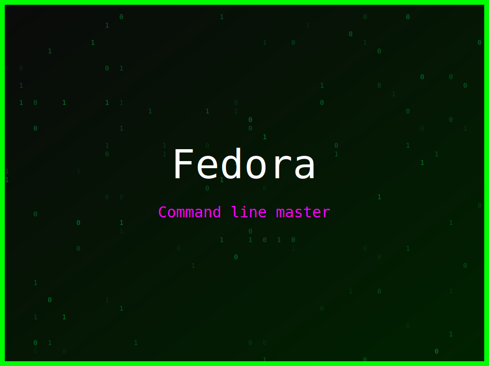

<section class="post-content">


    <div class="details-container">
        
        
        <ul class="details-list">
            <li><strong>Autor:</strong> piolinux</li>
            <li><strong>Descrição:</strong> Arte digital Fedora com um design dinâmico, para os mestres da linha de comando.</li>
            <li><strong>Distro:</strong> Fedora</li>
            <li><strong>Frases:</strong> Open Source rocks, Command line master, Open Source Forever</li>
            <li><strong>Tags:</strong> matrix, colorido</li>
        </ul>
        <a href="../galeria.html">Voltar para a galeria</a>||
        <a href="../wallpaper14.svg" download="wallpaper-fedora-o-comando-master.svg">Baixar Wallpaper</a>
    </div>
</section>
</html>
